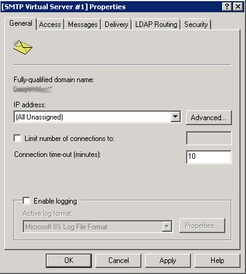
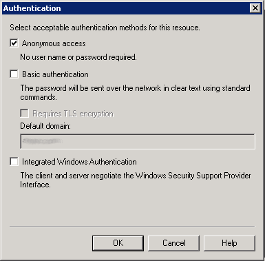
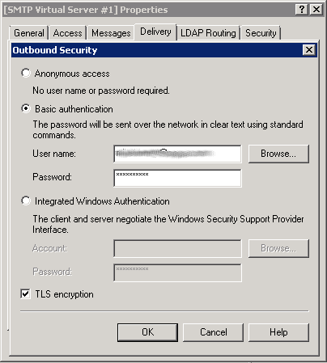
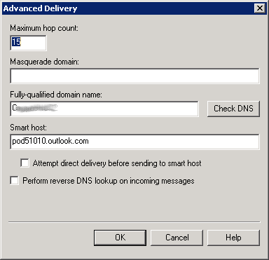

Setup Windows Server 2008 SMTP Relay for Office 365 « JulianBen.com
Many small businesses have printers that scan to e-mail, phone systems that send e-mail status updates, and a number of other e-mail enabled applications and devices. When converting to a cloud based e-mail system, like Office 365, sometimes these devices cannot be configured to send e-mail over encrypted links to the cloud. Office 365 required an SMTP connection that supports TLS encryption and many legacy devices or applications don’t support this.
The solution is to install an onsite SMTP relay that supports an encrypted connection. Fortuneately, Windows Server supports an SMTP relay for Office 365.
This how-to guide assumes you have an operational Windows Server 2008 server within your company / organization. It will work through adding the correct roles and features to Windows Server 2008, and then configuring them for communicating with Online Exchange within Office 365.
Before you can configure the relay, you must know the exact mail server addresses to use in Office 365. To determine those, follow these steps:
- Login in to the Microsoft Online Services Portal.
- Click on Outlook
- Click Options (upper right corner)
- Click on About
- There will be a section titled External SMTP setting that looks like:
office-365-external-smtp-setting (image not restored from the original import)
The important information is:
- Server name: pod51010.outlook.com (your’s may be different)
- Port: 587
- Encryption method: TLS
You will use this information when configuring the SMTP Relay below.
Now it’s time to install and configure the SMTP relay component inside of Windows Server 2008. The instructions below assume you are logged in and have administrator access to the server you are adding the SMTP Relay server to.
The steps for configuring a Windows Server 2008 SMTP relay for Office 365 are:
- Add the SMTP Server feature. (Start->Administrative Tools->Server Manager->Features->Add Features->SMTP Server). The Add features wizard bring up the Select Role Services for the Web Server (IIS) role. Select the IIS Management Console role service. You’ll need this for step 2. In some older versions of Windows Server the SMTP Server function is included with the Web Server (IIS) role. For that case, make sure to include the IIS Management Console and IIS 6 Management Console features.
- If this server doesn’t have a certificate already installed, you will need to install one. Office 365 requires TLS encryption and for this server to use TLS, it must have a certificate installed. To create the self-signed certificate: (Start->Administrative Tools->Internet Information Services (IIS) Manager->Select Host->Server Certificates->Create Self-Signed Certificate)
- Enable SMTP Server. (Server Manager->Features-> Enable SMTP Server)
- Now it’s time to actually configure the SMTP Relay for Office 365. Start->Administrative Tools->Internet Information Services (IIS) 6.0 Manager.
- Click on the ‘+’ next to your host name.
- Right-click on the [SMTP Virtual Server…] and select Properties. It’s now time to step through each of the tabs to configure the SMTP relay.
- General Tab: The IP address should be set to (All Unassigned).

- Access Tab: Click Authentication… and select the Anonymous access check box. This is the authentication used by the applications and devices within your network to access the new SMTP relay. It is being configured to be open to every device on your network.

- Access Tab: Click Connection… Select ‘All Except the list below’ and leave the list below blank. This allows any device inside your firewall to access this relay.
2008-server-smtp-relay-office365-connections-security (image not restored from the original import) - Access Tab: Click Relay… Select ‘All Except the list below’ and leave the list below blank. This allows any device inside your firewall to access this relay. This setting is extemely open and assumes you trust the devices connecting to your network not to abuse this relay.
- Messages Tab: No changes. The default works well.
- Delivery Tab: Click Outbound Security… Select Basic authentication and enter the Office 365 username and password that will gateway will to authenticate with Office 365. The user name must be a fully qualified (ex: user@companyname.com) valid Office 365 user licensed for Exchange. For example if my domain is co365lab.com and the user to authenticate is admin, then the username would be admin@co365lab.com. Note that this same address must be used as the “From:” address for any e-mails sent to the relay from applications and devices.
Check TLS encryption.

- Delivery Tab: Click Outbound connections… Set the TCP port to 587.
2008-server-smtp-relay-office365-outbound-connections (image not restored from the original import) - Delivery Tab: Click Advanced Delivery and set the Fully-qualified domain name box to the name of the local server that is acting as the relay (ex: myserver1). Set the Smart host the full-qualified name of the Office 365 SMTP Server (ex. pod51010.outlook.com) that you determined if the first section. Make sure the “Attempt direct…” box is unchecked.

- LDAP Routing and Security Tabs: No changes to these areas.
- Make sure the SMTP Server is started. Right-click the SMTP Virtual Server and choose Start.
You’re done configuring the SMTP Relay within Windows Server 2008 to work with Office 365.